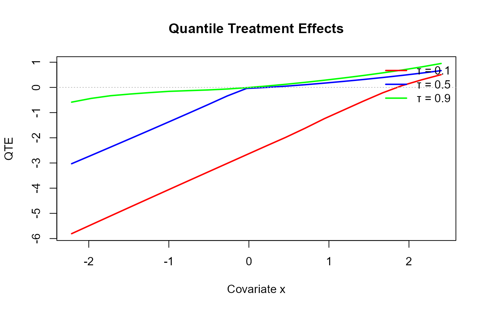
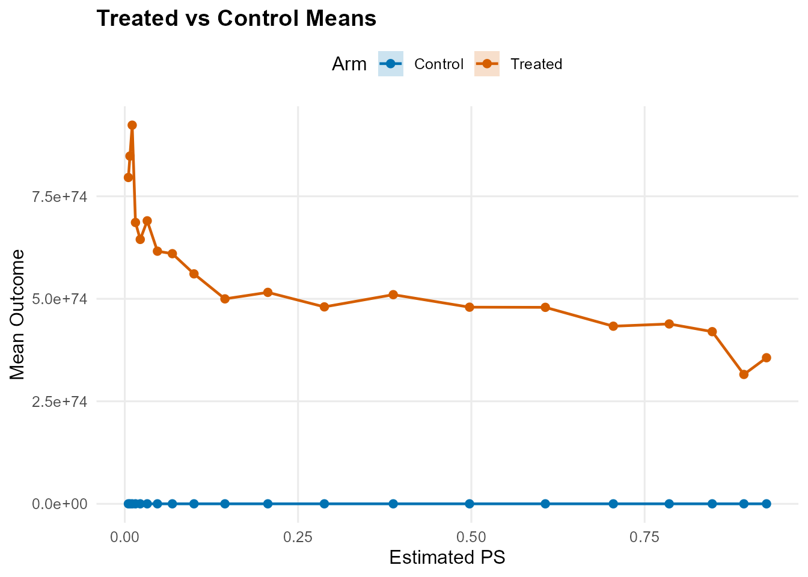
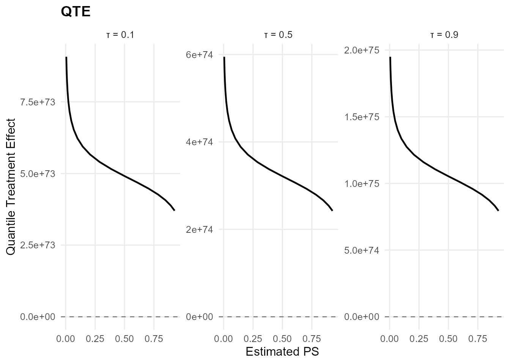
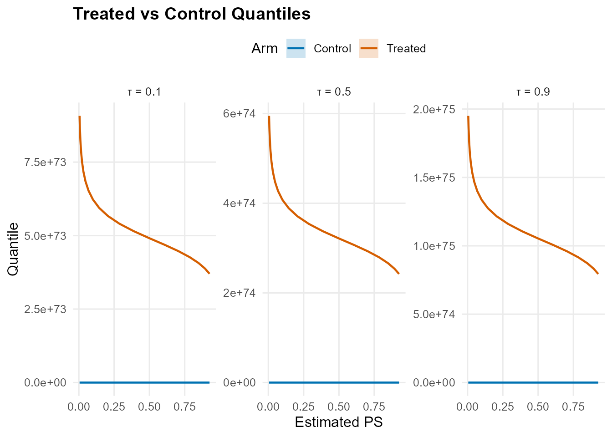

Overview
This vignette demonstrates the causal inference workflow using
build_causal_bundle() and run_mcmc_causal().
The package computes distributional treatment effects:
- Average Treatment Effect (ATE):
- Quantile Treatment Effect (QTE):
Theory (brief)
The causal workflow models the potential outcome distributions for treated and control groups while adjusting for covariates and (optionally) propensity scores. For each treatment arm $t \\in \\{0,1\\}$, $$ f_t(y \\mid x) = \\int K(y; \\theta_t(x))\\, dG_t(\\theta_t), $$ and causal estimands are derived from differences in the fitted distributions, such as $\\mathbb{E}[Y(1) - Y(0) \\mid X]$ and quantile contrasts.
Data Setup
library(DPmixGPD)
data("mtcars", package = "datasets")
df <- mtcars
X <- df[, c("wt", "hp", "qsec", "cyl")]
X <- as.data.frame(X)
T_ind <- df$am
y <- df$mpgCausal Bundle Construction
The build_causal_bundle() function creates a unified
structure containing:
- Propensity score (PS) model (optional)
- Control arm outcome model
- Treated arm outcome model
bundle <- build_causal_bundle(
y = y,
X = X,
T = T_ind,
backend = "sb",
kernel = "normal",
GPD = TRUE,
components = 6,
PS = "logit",
design = "observational",
mcmc_outcome = mcmc,
mcmc_ps = mcmc
)
bundle
#> DPmixGPD causal bundle
#> PS model: Bayesian logit (T | X)
#> Outcome (treated): backend = sb | kernel = normal
#> Outcome (control): backend = sb | kernel = normal
#> GPD tail (treated/control): TRUE / TRUE
#> components (treated/control): 6 / 6
#> Outcome PS included: TRUE
#> epsilon (treated/control): 0.025 / 0.025
#> n (control) = 19 | n (treated) = 13MCMC Sampling
fit <- run_mcmc_causal(bundle, show_progress = FALSE)Average Treatment Effect (ATE)
ate_result <- ate(fit, interval = "hpd", nsim_mean = 100)
print(ate_result)
#> ATE (Average Treatment Effect)
#> Prediction points: 32
#> Conditional (covariates): YES
#> Propensity score used: YES
#> PS scale: logit
#> Posterior mean draws: 100
#> Credible interval: hpd
#>
#> ATE estimates (treated - control):
#> id
#> 1
#> 2
#> 3
#> 4
#> 5
#> 6
#> estimate
#> 7096667510866028365642428628044606666822224404484288428622200606604
#> 10927924379432985311062624488260860420202224688024066204226826282040
#> 3148231478745433839686822406262662282062424408060400026860
#> 63687017154676256678026000046260662204804022422460426088868260262286
#> 295196764188676856844006666882882664046808848206640062406268282208486068402080600844880844806426024806208
#> 157059985200717430784060004660006682664600624046884428444462248006
#> lower
#> -2747790272822462333666200826
#> -4880832504754283040848062006
#> -71121724819515471532862622
#> -38639703248965966492868266068
#> -11311162535858176138606606628802086224684
#> -11725495887471299434446442606
#> upper
#> 7637892067445605590408406242460200048422
#> 7560155135420391095088842462046008644262
#> 5379519611544052621242002608824246
#> 7036001880198412145282226882860046222682
#> 3774127950000666032408820608600868668200440862424800064860600622
#> 135068503763886957392828008242420062622
#> ... (26 more rows)
X_new <- data.frame(
wt = seq(min(X$wt), max(X$wt), length.out = 20),
hp = stats::median(X$hp),
qsec = stats::median(X$qsec),
cyl = stats::median(X$cyl)
)
ate_grid <- ate(fit, newdata = X_new, interval = "hpd", nsim_mean = 100, level = 0.90)
print(ate_grid)
#> ATE (Average Treatment Effect)
#> Prediction points: 20
#> Conditional (covariates): YES
#> Propensity score used: YES
#> PS scale: logit
#> Posterior mean draws: 100
#> Credible interval: hpd
#>
#> ATE estimates (treated - control):
#> id estimate
#> 1 356291123625066394184866000266024442226442464404080022020264880482642686264
#> 2 315502974835711680788664866222022862860220464602406846402804284828060026642
#> 3 419886906742639523166888024484000824820404006442448006408824842080080408266
#> 4 438667860694979024960862882246680684240488040828264642808004684604824066408
#> 5 433185240151963102004206468286064404286848666460886286246666844664200464420
#> 6 479177795249027216928284226800024822008060888066662084846626224064200284628
#> lower upper
#> -10606632799802708049846888086866 915239986334302631764266680828
#> -11053149677324241554462806222406 738634134710587895764842286840
#> -7024420947056082042046840860802 607830592355878008926220680004
#> -7786960419907729740808224680264 528662899568321857204626406400
#> -6407761805367234753844640240488 484043760964961238164684446004
#> -5115586452450254644806426426268 380940956566093815764844048404
#> ... (14 more rows)
summary(ate_grid)
#> ATE Summary
#> ==================================================
#> Prediction points: 20
#> Conditional: YES | PS used: YES
#> Posterior mean draws: 100
#> Interval: hpd
#>
#> Model specification:
#> Backend (trt/con): sb / sb
#> Kernel (trt/con): normal / normal
#> GPD tail (trt/con): YES / YES
#>
#> ATE statistics:
#> Mean: 565186376147263644928062462826028020488060442600600042804400224482042426688 | Median: 512898071566213885928884420806820288484288048666040244266286462840466284426
#> Range: [315502974835711680788664866222022862860220464602406846402804284828060026642, 923496654020960354660264020806284420046888042808688222004600200864828826880]
#> SD: 161418131241249470490684028668426280422602000286682084420228040446264820002
#>
#> Credible interval width:
#> Mean: 4479715588633826153286204220422 | Median: 3759418269932851645224442886406
#> Range: [208686307002747477200800466, 11791783812034830154608624806486]ATE Visualization
The plot() method for ATE objects supports multiple
visualization types:
-
type = "both"(default): Returns a list withtrt_controlandtreatment_effectplots -
type = "effect": Treatment effect curve with credible intervals -
type = "arms": Treated vs control mean outcomes
ate_plots <- plot(ate_grid)
ate_plots$treatment_effect
ate_plots$trt_control
Quantile Treatment Effect (QTE)
probs <- c(0.1, 0.5, 0.9)
qte_result <- qte(fit, probs = probs, interval = "hpd")
print(qte_result)
#> QTE (Quantile Treatment Effect)
#> Prediction points: 32
#> Quantile grid: 0.1, 0.5, 0.9
#> Conditional (covariates): YES
#> Propensity score used: YES
#> PS scale: logit
#> Credible interval: hpd
#>
#> QTE estimates (treated - control):
#> index id
#> 0.1 1
#> 0.1 2
#> 0.1 3
#> 0.1 4
#> 0.1 5
#> 0.1 6
#> estimate
#> 650404490659630692928248040288022486826228088608424088488046048800
#> 1037102931530306356580800860242622808644426668248644282266208884668
#> 398081875308040653786022866402468488288248668440824602468
#> 6539472114607083069208426220262820088400866280800684004646246862268
#> 33012558298783776118206840680206486646822040880806600624280206066848444280226460600464646248648646622866
#> 16360914652806056706268428880028084068200888844004844822284428286
#> lower
#> -225613606647888984042442202
#> -351388101540508207264646604
#> -5332543871018899853220468
#> -3865799738613898444062848664
#> -1026750679860844839124848802842820082000
#> -714438999854781366922660426
#> upper
#> 532013503598497433248668626244266462400
#> 532878765743108933846862804206842822264
#> 416959370197471316928286042202042
#> 482588083140434884202400422684062064822
#> 328674345596142111926800648004046242460288028068240264688462628
#> 6866405888576005597204004006848462688
#> ... (90 more rows)
qte_grid <- qte(fit, probs = probs, newdata = X_new, interval = "hpd")
print(qte_grid)
#> QTE (Quantile Treatment Effect)
#> Prediction points: 20
#> Quantile grid: 0.1, 0.5, 0.9
#> Conditional (covariates): YES
#> Propensity score used: YES
#> PS scale: logit
#> Credible interval: hpd
#>
#> QTE estimates (treated - control):
#> index id
#> 0.1 1
#> 0.1 2
#> 0.1 3
#> 0.1 4
#> 0.1 5
#> 0.1 6
#> estimate
#> 37018216935626900484468480448440822888464606600486042842208866840282828662
#> 38810351651509365144644288624244466844062228020440268046208488468248440688
#> 40689249465861041744220262062204280006282824288222282202268886246680242048
#> 42659110974376508284882666660400840204848824200820424402642088684442846444
#> 44724340146518614336048682862686448080628486402646646266066622260606042220
#> 46889554159204924732882202202042242402288204682404608068244246066000684840
#> lower upper
#> -845144394215988977600884644262 25888567401960837298646206204846282646086622
#> -741690938141381292244806802664 26641718856267959944088068666046082826068026
#> -650901137706007963402042860208 27416781029091017804806800048040402286226626
#> -571224844850693377728820666266 28214391348112217488068640402868208262268042
#> -501301663912711333466026826286 29035205785090748824042622004084082424666422
#> -439937724185191273642246884486 29879899395347893216080404406620682822820242
#> ... (54 more rows)
summary(qte_grid)
#> QTE Summary
#> ==================================================
#> Prediction points: 20 | Quantiles: 3
#> Quantile grid: 0.1, 0.5, 0.9
#> Conditional: YES | PS used: YES
#> Interval: hpd
#>
#> Model specification:
#> Backend (trt/con): sb / sb
#> Kernel (trt/con): normal / normal
#> GPD tail (trt/con): YES / YES
#>
#> QTE by quantile:
#> quantile
#> 0.1
#> 0.5
#> 0.9
#> mean_qte
#> 60170109297553223224624866248024202246428462424408040242248446406660846660
#> 393986445151065435444226466002648842824842448424462080620000864046804602842
#> 1291350832900484849528662806826822688228028020482820422628064824242482260444
#> median_qte
#> 58021936172310087418244620220062844228424468882800660400002002602680204824
#> 379838996866779433306200644444440486226848264284620660648004882680428246420
#> 1244946457902224178000600806828004488844826222204488626244208822406084646846
#> min_qte
#> 37018216935626900484468480448440822888464606600486042842208866840282828662
#> 242338465280927359162824628862660486820882864244420224446402220220864844800
#> 794278081601866283908828868860006008640820800448886062804688464400248888404
#> max_qte
#> 90730176796431427920202444420880820462808480608480664484446880802402060062
#> 594865475049534360040026404220406280246044808266222606446088224280040844480
#> 1950084526264157262464262468200628664206280446884066288600642228068802046622
#> sd_qte
#> 16682297749508098956808624440482648848462480440082064224646608888420822224
#> 109355964239522834122462424866844668666060404888486660228882080262860848264
#> 358482851897598298708840044284226880828444026468842062460688268400020224022
#>
#> Credible interval width:
#> Mean: 454299494313147415486288202266040604484404808 | Median: 219277425358873240266022684082444682282408200
#> Range: [70597217474467358216442662808, 1538466977838651271140684046288826246428880884]QTE Visualization
The plot() method for QTE objects supports multiple
visualization types:
-
type = "both"(default): Returns a list withtrt_controlandtreatment_effectplots -
type = "effect": Quantile treatment effect curves faceted by quantile level -
type = "arms": Treated vs control quantile curves
qte_plots <- plot(qte_grid)
qte_plots$treatment_effect
qte_plots$trt_control
Model Summary
summary(fit)
#> -- PS fit --
#> DPmixGPD PS fit
#> model: logit
#>
#> -- Outcome fits --
#> [control]
#> MixGPD fit | backend: Stick-Breaking Process | kernel: Normal Distribution | GPD tail: TRUE
#> n = 19 | components = 6 | epsilon = 0.025
#> MCMC: niter=400, nburnin=100, thin=2, nchains=1
#> Fit
#> Use summary() for posterior summaries; plot() for diagnostics; predict() for predictions.
#>
#> [treated]
#> MixGPD fit | backend: Stick-Breaking Process | kernel: Normal Distribution | GPD tail: TRUE
#> n = 13 | components = 6 | epsilon = 0.025
#> MCMC: niter=400, nburnin=100, thin=2, nchains=1
#> Fit
#> Use summary() for posterior summaries; plot() for diagnostics; predict() for predictions.